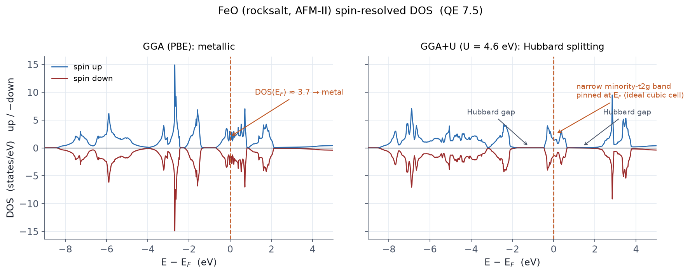

Goal
The gateway example for antiferromagnetic oxides. Build the AFM-II order of rocksalt FeO (alternating (111) spin planes) by splitting one element into two labels, and then watch GGA (PBE) predict a metal for a material that experiment says is an insulator with a gap of about 2.4 eV. Seeing this failure with your own eyes is the motivation for E11 (DFT+U).
New cards and variables
| Item | Role |
|---|---|
ntyp=3 (Fe1/Fe2/O) |
The same UPF under two labels: the key to AFM |
starting_magnetization ±0.6 |
Fe1 up, Fe2 down |
ibrav=0 + rhombohedral magnetic cell |
2 Fe + 2 O, volume = 0.5 a³ |
mixing_beta=0.2 + local-TF |
The mixing prescription for a touchy magnetic oxide |
Input file
&CONTROL
calculation = 'scf'
prefix = 'FeO'
outdir = './tmp/'
pseudo_dir = './pseudo/'
verbosity = 'high'
tprnfor = .true.
tstress = .true.
/
&SYSTEM
ibrav = 0
celldm(1) = 8.18 ! bohr (= 4.33 Å cubic lattice constant)
nat = 4
ntyp = 3
ecutwfc = 70
ecutrho = 700
occupations = 'smearing'
smearing = 'mv'
degauss = 0.01
nspin = 2
starting_magnetization(1) = 0.6 ! Fe1 up
starting_magnetization(2) = -0.6 ! Fe2 down
starting_magnetization(3) = 0.0 ! O
/
&ELECTRONS
conv_thr = 1.0d-8
mixing_beta = 0.2
mixing_mode = 'local-TF'
electron_maxstep = 300
/
ATOMIC_SPECIES
Fe1 55.845 Fe.pbe-spn-kjpaw_psl.1.0.0.UPF
Fe2 55.845 Fe.pbe-spn-kjpaw_psl.1.0.0.UPF ! same file, different label
O 15.999 O.pbe-n-kjpaw_psl.1.0.0.UPF
CELL_PARAMETERS (alat)
0.5 0.5 1.0
0.5 1.0 0.5
1.0 0.5 0.5
ATOMIC_POSITIONS (crystal)
Fe1 0.00 0.00 0.00
Fe2 0.50 0.50 0.50
O 0.25 0.25 0.25
O 0.75 0.75 0.75
K_POINTS (automatic)
6 6 6 0 0 0
Without the label split, QE treats the two Fe atoms as symmetry-equivalent and cannot form AFM order at all. The same split is required later by DFT+U (E11) and hp.x (E12).
Run
mpirun -np 8 pw.x -nk 4 -in feo.scf.in > feo.scf.out
What to check: measured (the real point of this example)
| Item | Measured (QE 7.5, PAW) | Reading |
|---|---|---|
| Total energy | −741.81592118 Ry (28 iterations) | |
| total magnetization | 0.00 μB | AFM established |
| absolute magnetization | 7.17 μB | total ≈ 0 with large absolute: the AFM badge |
| Fe local moments | +3.31 / −3.31 μB | The alternating (111) arrangement confirmed |
| O moment | 0.00 | |
the Fermi energy is 14.2231 ev |
printed, so a metal | The GGA failure. Experiment: an insulator (~2.4 eV) |

The AFM order itself came out perfectly (moments ±3.31 μB), yet the electronic structure is metallic. That is the self-interaction error of GGA delocalizing the Fe-3d electrons, and it is why the U correction exists (Chapter 13).
Exercises
- Run the PDOS pipeline of E7 and confirm that the states at the Fermi level are Fe-3d.
- Converge the ferromagnetic arrangement (both +0.6) and compare its energy with AFM. Which is the ground state?
- Verify by determinant that the cell really holds 2 formula units (volume = 0.5 a³).
- Set all
starting_magnetizationto zero. Which solution do you land in?
Keeping ntyp=2 (Fe/O) and giving ± initial moments:
atoms of one type share one initial magnetization, so no AFM forms.
And if you built "AFM" but the total magnetization is not zero,
suspect a failed label split or symmetry enforcing FM
(R3, silent failures).
Related chapters
12 Spin polarization and magnetism · 13 DFT+U and the HUBBARD card · 07 Controlling SCF convergence